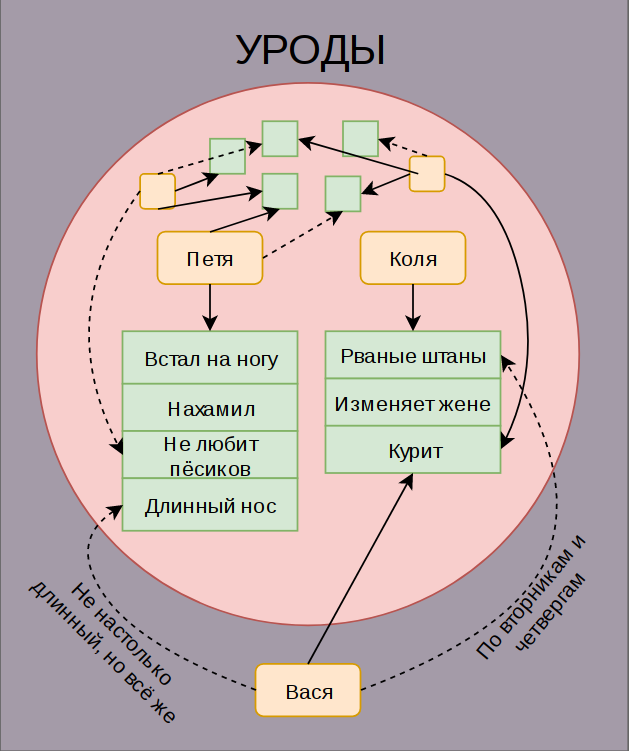

Про ярлыки и квадратно-гнездовой способ мышления

Один мой друг натолкнул меня на мысли о "навешивании ярлыков". Что же в сущности такое - эти ярлыки и зачем их на кого-то навешивать? На мой взгляд всё очень просто. Ярлыки - это принадлежность к некоей категории или нескольким категориям. Наш мозг склонен структурировать информацию, потому что в таком виде ей легче оперировать и её легче хранить. Мозг бережёт себя от перегрузок, переходя на более высокий уровень абстракции. На этом уровне он отбрасывает массу незначительных, как ему кажется, деталей, создавая ассоциативную связь вида "Вася" -> "Урод". Для создания данной связи ему нужно, чтобы в категории "Уроды" уже находился некий индивид, скажем, "Петя", или группа индивидов, например, "Байкеры", которые имеют некие признаки или совершили некие действия подобные действиям нашего гипотетического Васи.
А вот тут начинается самое интересное! Мы этого часто не замечаем, но создание ассоциативных связей и разделение по группам (читай - навешивание ярлыков) происходит в фоновом режиме и, зачастую, на подсознательном уровне. Просто в один прекрасный момент, когда нас кто-то спрашивает о Васе, мы понимаем, что он урод, ну потому что урод и всё тут. Мы можем не отслеживать явно сравнение с Петей, Колей, Маней, которые в этой группе уже сидят давно. И что самое главное, Петя мог попасть в группу "Уродов" по причине X, в то же самое время Петя обладает свойством Y, в которым в достаточной мере обладает и Вася. И вот, Вася автоматически становится уродом, хотя свойство Y может не быть достаточным условием для помещения в эту группу. Например, у Васи черты лица напоминают черты лица Пети и вот, мы уже предпочитаем с Васей не связываться, потому что Петя нам год назад встал на ногу в коридоре, да ещё и нахамил. Мы подсознательно выстраиваем защитный барьер и на всякий случай отправляем за него Васю, наш мозг подстраховался в целях сберечь нашу психику.
Это кажется несколько притянутым за уши. Но теперь представим, что есть некий Коля, который постоянно ходит в рваных джинсах. И мы знаем, что Коля крутит роман с секретаршей Зиной. То есть, Коля аморальный тип, который водит за нос свою жену, значит, может обмануть и нас при случае. И Вася тоже иногда ходит в рваных джинсах. Так, джинсы у Васи рваные как у Коли, морда мерзкая как у Пети, а ещё на странице в социальной сети у Васи музыка, которую мы терпеть не можем - а уж не урод ли Вася?
Да, пожалуй, нельзя описывать таким вот детерменирвоанным способом работу мозга и подсознания. Вероятно, это профессиональная деформация и, описывая уродов и Петю, моё воображение сразу услужливо подсовывает мне структуру базы данных с категориями, людьми, индексами, правилами построения связей между ними. Чтобы было проще, я нарисовал диаграмму к этому посту. Принцип, который я описал, был бы ещё ближе к истине, если бы у нас было бинарное мышление и связи. В нейросетях вместо битов оперируют кубитами, которые принимают значение не 0 или 1, а градацию значений между 0 и 1. Тут так же. Связи со свойствами конкретных Петь и Коль зачастую могут быть неявными, периодическими, неполными. Например, Вася носит рваные джинсы только по вторникам и четвергам. А лицо Пети напоминает лицо Васи на 35,789% (условно). Таким образом, мы готовы записать Васю в уроды по совокупности признаков, но в то же время нам сложнее проследить появление и обнаружить само наличие данных связей.
А ещё наш мозг очень любит, когда мы оказываемся правы. Когда наши предположения находят подтверждение, это всегда приносит нам удовольствие, хотя бы и небольшое. Даже в том случае, если последствия того, чему мы нашли подтверждение сами по себе носят негативный для нас характер. Вспомните, что вы чувствуете, когда произносите фразу, начинающуюся с "Ну я же говорил, что ..." или "Я же предупреждал о ...". И тут вы внезапно видите на улице нашего Васю, который курит на автобусной остановке. А Коля тоже курит, причём постоянно. И вот, наш мозг получает новую прямую связь между Колей и Васей - "Ну я же говориииил!". А вы ещё и сам не курите и запах сигарет не любите. И вот, Вася отправляется в группу к остальным уродам, получая свой ярлык.
Чем грозит для Васи получение ярлыка? Если категория носит позитивный характер, то Вася авансом в наших глазах в какой-то небольшой мере наделяется позитивными чертами, присущими людям, входящим в эту группу. Мы начинаем Васю идеализировать. Если же группа носит негативный характер, происходит аналогичный процесс, но уже в отношении негативных качеств - "Да наверняка он ещё и бухает, а может и жене изменяет до кучи!".
Почему? Мы обычно не задумываемся, списывая всё на то, что "Вася производит на нас такое впечатление". А на самом деле потому что курит (хоть и крайне редко), ходит в рваных джинсах (иногда) и за то, что у него длинный нос (в чём Вася совершенно не виноват). А теперь представим, что в группе "Уроды" у нас варится в собственном соку несколько десятков человек, каждый из которых обладает какими-то своими качествами и чертами, о каждом из которых наш мозг помнит массу различных событий и всё это как паутиной, обрастает связями, десятками, сотнями и тысячами связей, причём постоянно и преимущественно неявно для нас. Чем больше людей в группе - тем больше качеств. Чем больше качеств - тем больше связей и больше шансов в эту группу попасть ни в чём не виноватому Васе.
А ещё есть к примеру, упомянутая группа "Байкеры" и мы знаем множество тех, кто входит в эту группу и при этом курит, носит рваные джинсы и т.п.. Одним словом, у групп "Байкеры" и "Уроды" есть достаточное множество общих качеств, что приводит к постепенной ассимиляции одной группы другой, из чего мозг делает вывод "Байкеры - уроды". В начале этой формулировки нет слова "некоторые", поэтому мозг на это место автоматически подставляет непроизнесённое "ВСЕ". Соответственно, всем байкерам достаётся пачка нелицеприятных качеств из категории "Уроды" и наоборот - эти две группы взаимно обогощают друг-друга и со временем становятся для нашего мозга синонимами.
Конечно, всё не так плохо, потому что позитивные ярлыки у нас тоже имеются. Но вот вопрос - в какую категорию больше шансов попасть гипотетическому Мише, с которым вы только что познакомились - в позитивную или в негативную? Помните притчу о белом и чёрном волке, когда побеждает тот волк, которого ты кормишь лучше? Тут та же схема. На чём вы акцентируете своё внимание при общении с человеком, какой изначальный настрой имеете, туда вы Мишу и отправите. Либо следом за Васей к уродам, либо в другую кучку белых и пушистых человеков. Задумайтесь, скольких людей в своей жизни вы таким образом отсортировали? Как часто испытывали антипатию к кому-либо, не находя явных причин? А не имеет ли смысл раз в год, скажем, пролистывать список контактов в социальной сети и, глядя на фото очередного человека задумываться - насколько он плох или хорош в ваших глазах? Были ли реальные причины так считать или это ваш мозг обманул вас, промаркировав очередной десяток людей белыми и чёрными галочками? Или может быть есть целые категории людей, которых вы заранее считаете отмороженными на всю голову? Может быть среди ваших условных "веганов", "йог" и "хипстеров" есть отличные люди? Задумайтесь над этим.
Теги: жизненное, мысли-вслух